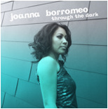

Welcome! Monarch-Live.com is your premier source for live music entertainment. Simply put, it is our passion to provide dynamic music performances that will add class and style to any occasion.
Creating the perfect ambience for your wedding reception or corporate event can be made easy when working with us. Our excellent music services will help make any room transform into a place of buoyant interaction and enjoyment. From intimate lunches to elaborate galas, we provide a unique and memorable musical experience for you and your guests.
Let our helpful staff assist you in adding the finishing touches to your next special event. Contact us here to find out what the right entertainment package is for you.
Some of our past clients include:
- Archeo
- Intercontinental Hotel
- Leo Burnett Advertising
- Agency
- Local Co.
- The Humber Room
- The Sheraton Hotel
- The University of Toronto
We understand the impact that music has on the way people experience their surroundings. The delivery of live music is important to us and we care about how its presented. Whether you are looking to hire a sophisticated jazz band or an up-beat dance band, our musicians have the skill and the style to add warmth and vibrancy to your engagement.
Under the direction of vocalist/keyboardist, Joanna Borromeo, our musicians perform songs in a variety of styles, including down-tempo classic jazz, latin, Motown R&B, 90's R&B, neo-soul, soulful blues and contemporary dance/pop music. Depending on the size of the event, the instrument configuration of the band can be as small as a solo piano performer (with or without vocals) or as large as a 6-piece ensemble, complete with a live horn section. For medium-sized events, we can accommodate our clients with a small trio or quartet. Please visit our Music Styles page for more details.
When it comes to making additional arrangements for live music, we make sure that we get in touch with everyone involved in the coordinating process. That means we will communicate with the event planner and the venue coordinator, as well as the sound engineering company, to find out important information about the size of the venue, what equipment is already available for use, etc. This ensures that no small detail is left up to chance. We take the time to speak with our clients and their team so that everyone knows what to expect on the day of the event, giving our clients more peace-of-mind.
To book an event, get free consultation, find out more information and see our performance schedule, please click here.

Music video
Nothing to Lose
Album

Available on iTunes
Joanna Borromeo currently lives in Calgary, AB as a songwriter and live music performer. She has performed throughout Canada, the UK and in the Caribbean over the span of almost ten years. She has played with several artists and bands, including R&B artist Divine Brown, folk singer/songwriter David Myles, alt. country/pop singer Kate Rogers, instrumental folk/jazz band The Outlanders, Afro-Caribbean jazz fusion band Kalabash, jazz singer Molly Johnson, Hip-Hop artist and producer Slakah the Beatchild, Swedish soul singer/songwriter Tingsek, pop/Hip-Hop act God Made Me Funky, New York-based afrobeat ensemble The Superpowers, and R&B cover band Soular, to name a few. She has performed in several of Canada's top theatres, including the historically famous Massey Hall in Toronto, ON, the Jack Singer Concert Hall in Calgary, AB, and the Playhouse Theatre in Fredericton, NB.
As a solo artist, Ms. Borromeo has self-released her own EP, called Through The Dark, in March of 2010. Her album has gained success on radio, having hit the top Hip-Hop/Soul/Funk charts on various Alberta radio stations including CKUA, CJSW, and CJSR. The Great American Song Contest has also recognized Joanna's songwriting abilities by listing her song, Burn, as one of the top three songs in the Hip-Hop and R&B songwriting category of 2009.
Check out the media player below to hear Joanna's album, Through the Dark. There, you will also find recordings of Ms. Borromeo's piano trio.
She also has a blog at www.joannaborromeo.com.
Our performance philosophy is simple. We play music that complements the setting of the event. For lunches, dinners, sit-down receptions, cocktail parties and the like, we play music that is light and easy to listen to. Conversation is important at these types of gatherings so we play with just enough energy and volume for guests to talk comfortably. Hiring Joanna Borromeo with her piano trio or quartet is the answer to pairing quality background music with small to medium parties. Ambient grooves, classic instrumental or vocal jazz, mid-tempo soul/R&B and adult contemporary tunes will add just the right touch to your special event.
To listen to Joanna Borromeo and her piano trio, please browse through the media player below.
Interested in booking a dance band? We've got that covered, too. Joanna Borromeo and her 6-piece band play classic Soul and R&B, as well as some contemporary hits. Artists like Marvin Gaye, The Supremes, Aretha Franklin, Stevie Wonder, Michael Jackson, Prince, Earth Wind and Fire, and the Jackson Five are covered. For those who like the newer generation of R&B/dance music, artists like Sade, Maxwell, Justin Timberlake, and Katy Perry are covered. Audio samples of Joanna Borromeo and her dance band are will be available soon.
Contact us today to find out more information about our service packages, rates and availability.
We are happy to answer any questions you may have about our services and rates. To find out our availability, please see the Performance Schedule below.
For further information, please contact:
Joanna Borromeo
Monarch Live Inc.
Tel. 403-397-8569
Performance Schedule:
April 16th - Joanna and the Acrobatiks will be playing for Decidedly Jazz Danceworks' Annual Fundraiser
We get inspired by different avenues of art, culture, design and spaces. Here's our list of favourites.